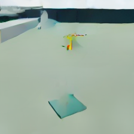
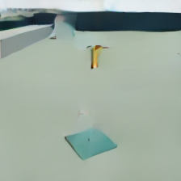

MISSIONOS · WAM POST-TRAINING / 2026-09-28
先行機を待つための、
動的な追加学習。
固定カメラで記録した退出・停止・再進入を使い、実WAMを2,048ステップ追加学習しました。学習前後の予測と、実際の16秒後を比較します。
飛行への採用は保留しています。画像全体の誤差は約81%減りましたが、先行機が予測から消えています。停止中・再進入の2件を「空き」と読むため、待つ／進むの判断にはまだ使えません。
1 → 2 / 4新しい動作時刻 · 占有／空きの一致
2件学習後の誤った「空き」判定
45組学習データ · 評価用の未来記録は未使用
$18.53累計概算 / 上限$20 · VM削除済み
実モデルの記録 · 飛行操作なし
 推論前の実観測
推論前の実観測 学習前の予測
学習前の予測 追加学習後の予測
追加学習後の予測 実際の16秒後
実際の16秒後同じ状況の実カメラ動画
記録した224〜272フレームを4 Hzで再生。固定カメラ、動作を指定した先行機、あらかじめ配置した荷物です。AP保持・荷下ろし・バッテリー計測を含む飛行動画ではありません。
今回の確認範囲
- 追加学習の対象はWAM。VLAと飛行の安全Rulesは変更していません。
- 同じ場所・機体・経路で時刻を変更。静止状態2件の画像履歴と、全4件の未来の見た目は学習側と同じです。未知の場面への一般化は未確認です。
- 予測は「待ち続けた16秒後」の一点。待つ／進むの比較や、その間の衝突リスクは未検証です。
必要なのは完璧な画質ではなく、「まだ先行機がいるか」を判断に使えることです。
画像が崩れる原因の切り分け
同じ開発用観測から、生成ステップ数と予測時間を別々に変えました。評価用の未来画像を使って設定を選び直していません。

50ステップ / 0.25秒先50ステップ / 16秒先
250ステップ / 0.25秒先250ステップ / 16秒先